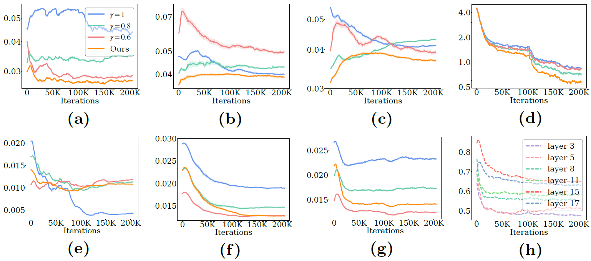
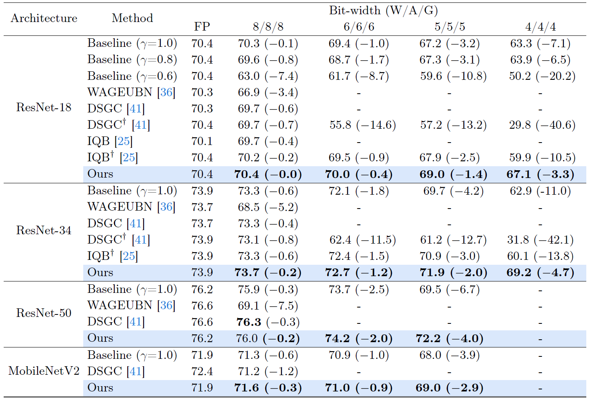

Comparison of ours with the baselines in terms of quantization error for gradients. (a-c) $E(G_{L})$, quantization error for large gradients, in 5th, 15th, 17th layers, respectively; (d) Training loss; (e-g) $E(G)$, quantization error for entire gradients, in 5th, 15th, 17th layers, respectively; (h) Clipping factors.
Abstract
Network quantization generally converts full-precision weights and/or activations into low-bit fixed-point values in order to accelerate an inference process. Recent approaches to network quantization further discretize the gradients into low-bit fixed-point values, enabling an efficient training. They typically set a quantization interval using a min-max range of the gradients or adjust the interval such that the quantization error for entire gradients is minimized. In this paper, we analyze the quantization error of gradients for the low-bit fixed-point training, and show that lowering the error for large-magnitude gradients boosts the quantization performance significantly. Based on this, we derive an upper bound of quantization error for the large gradients in terms of the quantization interval, and obtain an optimal condition for the interval minimizing the quantization error for large gradients. We also introduce an interval update algorithm that adjusts the quantization interval adaptively to maintain a small quantization error for large gradients. Experimental results demonstrate the effectiveness of our quantization method for various combinations of network architectures and bit-widths on various tasks, including image classification, object detection, and super-resolution.
Results

Quantitative comparison of gradient quantization methods on image classification. We report results on the validation split of ImageNet in terms of a top-1 accuracy. W/A/G: Bit-precision of weights/activations/gradients; FP: Results obtained by full-precision models; $\dagger$: Results reproduced by ourselves. Numbers in bold and parentheses are the best result and accuracy improvements or degradations, w.r.t full-precision models, respectively.
From these tables, we observe four things: 1) Our method outperforms other FXP training methods by a significant margin in terms of a top-1 accuracy, regardless of datasets, network architectures, and bit-widths. The accuracy of DSGC is slightly better than ours for the 8/8/8-bit setting only on the ResNet-50 architecture. Nevertheless, ours shows a lower accuracy drop w.r.t the full-precision model. Note that the full-precision model in DSGC also shows a higher accuracy, possibly due to different training settings for, e.g., the number of epochs and learning rate scheduling. 2) We can see that the accuracy drop of DSGC becomes severe as bit-widths decrease. A plausible reason is that reducing the bit-width increases the quantization error for entire gradients, and the quantization interval of DSGC becomes narrower in order for keeping a small error for entire gradients. It incurs a significant quantization error for large gradients, and the performance in turn degrades drastically. Compared to DSGC, our method provides better results consistently, confirming once more that lowering the quantization error for large gradients is important in the FXP training. 3) Our method shows better results compared to the state of the art, including DSGC and IQB, in particularly low-bit settings (i.e., 6/6/6, 5/5/5, and 4/4/4-bit settings). For example, our method performs better than IQB employing a piecewise FXP format for gradient quantization, when training ResNet-18 and -34 in 4/4/4 and 5/5/5-bit settings, and obtains the superior results over the baseline when training in 4/4/4 and 5/5/5-bit settings. This suggests that maintaining a small error for large gradients is effective to improve the quantization performance in the low-bit settings. 4) We can clearly observe that ours gives better results than the baselines with various architectures consistently, especially in the 4/4/4 and 5/5/5-bit settings. This indicates that maintaining a small quantization error for large gradients, regardless of the layers or training iterations, is significant in the FXP training.